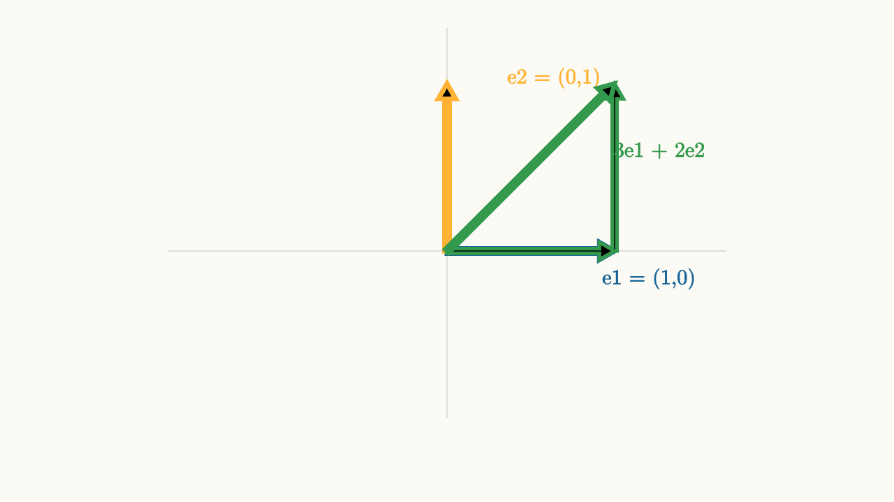
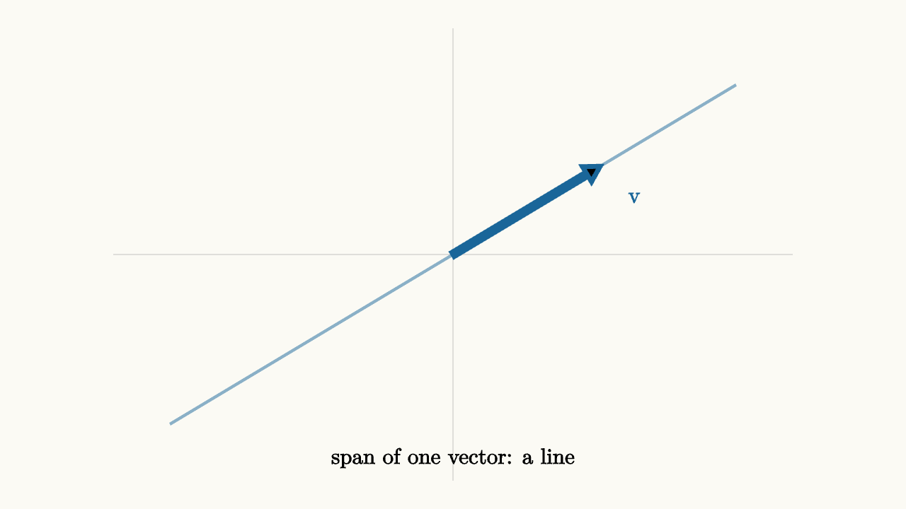
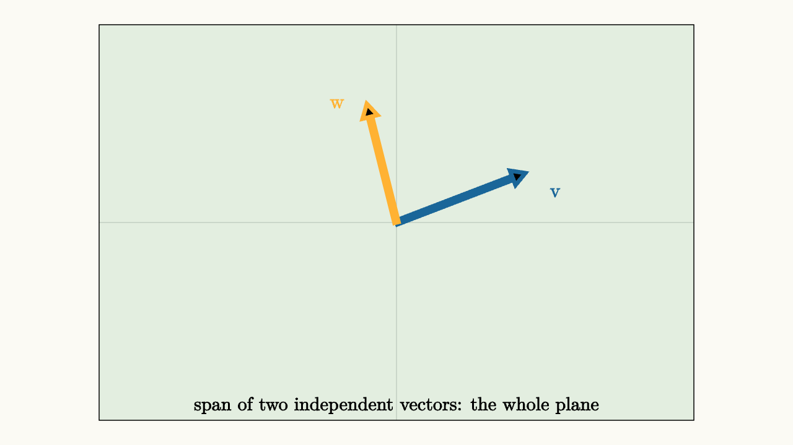

Vectors Are Moves Before They Are Points
Here is a puzzle that sounds simple but quietly confuses almost everyone who learns linear algebra:
What is the vector (3, 5)?
Your first instinct is probably to say: a point. The location three units to the right and five units up. Draw it as a dot. Done.
But then someone asks you to add (3, 5) and (1, 2). You write (4, 7). And you probably picture that as adding the x-coordinates and y-coordinates separately. But why? If both quantities are points, what does adding two locations even mean? What is the "average GPS coordinate of New York and London"? That number is computed, but it is geographically meaningless.
The answer is that (3, 5) is being used as something other than a point. It is a displacement -- a move. Go three units in the x-direction, then five units in the y-direction. The starting location is not part of the description. That same move could start from the origin, from (7, -2), from wherever. The displacement carries the same meaning regardless.
This shift in perspective -- from point to move -- is the conceptual foundation of the entire series. Everything else, matrices, determinants, eigenvectors, will be richer and more intuitive once you see vectors as reusable moves rather than fixed locations.
The Difference That Matters
Imagine a city built on a perfect grid. The post office is at position (4, 3) -- four blocks east, three blocks north of city hall. The library is at position (2, 7). These are locations. They are pinned to city hall as a reference.
Now a delivery driver finishes at the post office and needs to get to the library. The directions are: go two blocks west, then four blocks north. That instruction is a displacement. It does not care where city hall is. It works whether you start from the post office, from home, or from anywhere else.
The displacement from post office to library is (2, 7) minus (4, 3), which is (-2, 4). That subtraction converts two positions into a move. The result is position-independent.

source
background = [0.985, 0.98, 0.955, 1]
camera = Camera(4b)
mesh diagram = block {
. stroke{alpha{0.3} GRAY, 1} Line(start: [-3, 0, 0], end: [3, 0, 0])
. stroke{alpha{0.3} GRAY, 1} Line(start: [0, -2, 0], end: [0, 2, 0])
. fill{BLUE} center{[1.6, 1.2, 0]} Circle(0.09)
. fill{BLUE} center{[-0.8, 1.7, 0]} Circle(0.09)
. color{BLUE} center{[1.9, 1.05, 0]} Text("A", 0.72)
. color{BLUE} center{[-0.5, 1.9, 0]} Text("B", 0.72)
. stroke{ORANGE, 3.5} Arrow(start: [1.6, 1.2, 0], end: [-0.8, 1.7, 0])
. stroke{ORANGE, 3.5} Arrow(start: [-0.5, -1.0, 0], end: [-2.9, -0.5, 0])
. stroke{ORANGE, 3.5} Arrow(start: [0.8, -0.5, 0], end: [-1.6, 0.0, 0])
. color{ORANGE} center{[0, -1.7, 0]} Text("same move, different starting places", 0.70)
}That orange arrow is the same displacement three times, starting from different points. The location changes. The move does not. This is the free vector idea: a displacement has a direction and a magnitude, but no fixed home.
Why Adding Moves Makes Sense
If vectors are moves, addition is obvious. Do one move, then do the other. The result is a single move that gets you to the same final destination.
Take move v: go two blocks east and one block north. Take move w: go one block east and three blocks north. Do v first, then w. You have moved three blocks east and four blocks north total. That combined effect is v + w = (3, 4).
source
background = [0.985, 0.98, 0.955, 1]
camera = Camera(4b)
"first move v"
mesh axes = block {
. stroke{alpha{0.3} GRAY, 1} Line(start: [-2.5, 0, 0], end: [2.5, 0, 0])
. stroke{alpha{0.3} GRAY, 1} Line(start: [0, -2, 0], end: [0, 2, 0])
}
mesh v_arrow = stroke{BLUE, 4} Arrow(start: [0, 0, 0], end: [1.2, 0.6, 0])
mesh v_label = color{BLUE} center{[0.8, 0.0, 0]} Text("v", 0.72)
play Write(0.8)
"then move w"
mesh w_arrow = stroke{ORANGE, 4} Arrow(start: [1.2, 0.6, 0], end: [1.8, 2.1, 0])
mesh w_label = color{ORANGE} center{[2.1, 1.4, 0]} Text("w", 0.72)
play Write(0.7)
"combined result"
mesh sum_arrow = stroke{GREEN, 4} Arrow(start: [0, 0, 0], end: [1.8, 2.1, 0])
mesh sum_label = color{GREEN} center{[-0.3, 1.1, 0]} Text("v + w", 0.72)
play Write(0.7)Notice the head-to-tail geometry. Place w starting where v ends. The shortcut from start to finish is v + w. You get the same result if you do w first and then v -- that is commutativity, and geometrically it is obvious: both paths reach the same final destination.
This is why adding positions is often meaningless but adding displacements is always meaningful. A displacement describes a journey. Two journeys can be combined into one.
Scaling a Move
Scaling a vector means scaling the move. The vector 2v is the same direction but twice as far. The vector 0.5v goes half as far. The vector -v reverses direction.
source
background = [0.985, 0.98, 0.955, 1]
camera = Camera(4b)
"original move"
mesh axes = block {
. stroke{alpha{0.3} GRAY, 1} Line(start: [-3, 0, 0], end: [3, 0, 0])
. stroke{alpha{0.3} GRAY, 1} Line(start: [0, -2, 0], end: [0, 2, 0])
}
mesh arr = stroke{BLUE, 4} Arrow(start: [0, 0, 0], end: [1.1, 0.65, 0])
mesh lbl = color{BLUE} center{[0.7, -0.35, 0]} Text("v", 0.72)
play Write(0.8)
"double"
arr = stroke{BLUE, 4} Arrow(start: [0, 0, 0], end: [2.2, 1.3, 0])
lbl = color{BLUE} center{[1.3, -0.3, 0]} Text("2v", 0.72)
play Lerp(1.0)
"half"
arr = stroke{GREEN, 4} Arrow(start: [0, 0, 0], end: [0.55, 0.325, 0])
lbl = color{GREEN} center{[0.6, -0.35, 0]} Text("0.5v", 0.72)
play Lerp(1.0)
"reverse"
arr = stroke{ORANGE, 4} Arrow(start: [0, 0, 0], end: [-1.1, -0.65, 0])
lbl = color{ORANGE} center{[-0.6, 0.4, 0]} Text("-v", 0.72)
play Lerp(1.0)Here is what makes linear algebra "linear": adding and scaling cooperate perfectly. Scaling the combined move and then doing it is the same as scaling each individual move and combining them:
This is not a rule someone arbitrarily decided. It is a truth about moves. If a journey consists of two legs, and you want to make the whole journey 3 times as long, it is the same as making each leg 3 times as long.
Coordinates Are Receipts for Moves
Now we can understand what coordinates really are. A coordinate system is a choice of two reference moves -- call them the basis moves. Then every other move in the plane can be described as "this much of the first move plus that much of the second move."
In the usual system, the first basis move is (1, 0) -- one step east -- and the second basis move is (0, 1) -- one step north. The vector (3, 5) means:
Three units of the east move, five units of the north move.

source
background = [0.985, 0.98, 0.955, 1]
camera = Camera(4b)
mesh diagram = block {
. stroke{alpha{0.3} GRAY, 1} Line(start: [-2.5, 0, 0], end: [2.5, 0, 0])
. stroke{alpha{0.3} GRAY, 1} Line(start: [0, -1.5, 0], end: [0, 2, 0])
. stroke{BLUE, 4} Arrow(start: [0, 0, 0], end: [1.5, 0, 0])
. stroke{ORANGE, 4} Arrow(start: [0, 0, 0], end: [0, 1.5, 0])
. color{BLUE} center{[1.8, -0.25, 0]} Text("e1 = (1,0)", 0.68)
. color{ORANGE} center{[0.95, 1.55, 0]} Text("e2 = (0,1)", 0.68)
. stroke{GREEN, 3} Arrow(start: [0, 0, 0], end: [1.5, 0, 0])
. stroke{GREEN, 3} Arrow(start: [1.5, 0, 0], end: [1.5, 1.5, 0])
. stroke{GREEN, 4} Arrow(start: [0, 0, 0], end: [1.5, 1.5, 0])
. color{GREEN} center{[1.9, 0.9, 0]} Text("3e1 + 2e2", 0.68)
}But this is a choice! You could pick different reference moves. A navigator might use "one kilometer in the direction of the harbor" and "one kilometer perpendicular to that." A street grid might use moves along diagonal avenues rather than north-south and east-west. The physical displacement stays the same -- only the receipt changes.
This distinction between the move itself and its numerical description is crucial. We will return to it in the essay on change of basis. For now, notice that different coordinate systems give different numbers for the same physical vector.
The Zero Vector and the Identity Move
If vectors are moves, the zero vector is the move that goes nowhere. Start anywhere, do zero-vector, and you end up exactly where you started.
This sounds trivial, but the zero vector plays the role of identity in addition:
Do any move, then do "go nowhere." The result is the original move. The zero vector is not a degenerate case or an edge condition. It is the identity element of the displacement algebra.
Similarly, for any vector v, the vector -v is the "undo" move. Go in the exact opposite direction by the exact same amount, and you return to the start:
The structure of vectors -- with addition, zero, negatives, and scaling -- is called a vector space. The axioms of a vector space are not arbitrary rules. They are natural properties that every reasonable system of moves must satisfy.
Span: The Places You Can Reach
Given a collection of moves, some destinations may be reachable and others not. The span of a set of vectors is the collection of all destinations reachable by combining those moves in any combination you like.
Start with a single nonzero move v. By scaling it -- doing it twice as hard, or halfway, or in reverse -- you can reach any point along its line. That line through the origin is the span of v.

source
background = [0.985, 0.98, 0.955, 1]
camera = Camera(4b)
mesh diagram = block {
. stroke{alpha{0.3} GRAY, 1} Line(start: [-3, 0, 0], end: [3, 0, 0])
. stroke{alpha{0.3} GRAY, 1} Line(start: [0, -2, 0], end: [0, 2, 0])
. stroke{alpha{0.5} BLUE, 2.5} Line(start: [-2.5, -1.5, 0], end: [2.5, 1.5, 0])
. stroke{BLUE, 4} Arrow(start: [0, 0, 0], end: [1.3, 0.78, 0])
. color{BLUE} center{[1.6, 0.5, 0]} Text("v", 0.72)
. color{BLACK} center{[0, -1.8, 0]} Text("span of one vector: a line", 0.70)
}Now add a second move w that points in a genuinely different direction -- not just a scaled version of v. Any combination av + bw can reach any point in the plane, because by tuning a and b you can hit any x and any y independently.

source
background = [0.985, 0.98, 0.955, 1]
camera = Camera(4b)
mesh diagram = block {
. stroke{alpha{0.3} GRAY, 1} Line(start: [-3, 0, 0], end: [3, 0, 0])
. stroke{alpha{0.3} GRAY, 1} Line(start: [0, -2, 0], end: [0, 2, 0])
. fill{alpha{0.12} GREEN} center{[0, 0, 0]} Rect([6, 4])
. stroke{BLUE, 4} Arrow(start: [0, 0, 0], end: [1.3, 0.5, 0])
. stroke{ORANGE, 4} Arrow(start: [0, 0, 0], end: [-0.3, 1.2, 0])
. color{BLUE} center{[1.6, 0.3, 0]} Text("v", 0.72)
. color{ORANGE} center{[-0.6, 1.2, 0]} Text("w", 0.72)
. color{BLACK} center{[0, -1.85, 0]} Text("span of two independent vectors: the whole plane", 0.68)
}If w is just a scalar multiple of v -- if both arrows point along the same line -- then their span is still just a line. The second move adds no new direction. You can combine them all day and never reach any destination off that line.
This is the core idea behind linear independence: a set of vectors is independent when each one adds genuinely new directions to the mix -- when no vector in the set is reachable by combining the others.
Why This Matters for Linear Algebra
The payoff from thinking of vectors as moves is that every subsequent concept gets a physical interpretation.
Matrix multiplication asks: given a move, where does a particular transformation send it? The answer is another move. You are not moving a point to another point in some abstract sense. You are transforming one displacement into another.
The linear algebra axiom -- that transformations respect addition and scaling -- becomes: if you transform move v and move w and then combine them, you get the same result as combining them first and then transforming. The transformation and the combining operations can be interchanged.
That constraint is incredibly powerful. It means a transformation is completely determined by where it sends a handful of basis moves. Know where e1 and e2 land, and you know where every vector lands. Every other vector is just a combination of those two, and the transformation carries that combination forward.
source
background = [0.985, 0.98, 0.955, 1]
camera = Camera(4b)
"basis moves"
mesh axes = block {
. stroke{alpha{0.3} GRAY, 1} Line(start: [-2.5, 0, 0], end: [2.5, 0, 0])
. stroke{alpha{0.3} GRAY, 1} Line(start: [0, -2, 0], end: [0, 2, 0])
}
mesh e1 = stroke{BLUE, 4} Arrow(start: [0, 0, 0], end: [1.0, 0, 0])
mesh e2 = stroke{ORANGE, 4} Arrow(start: [0, 0, 0], end: [0, 1.0, 0])
mesh v = stroke{GREEN, 4} Arrow(start: [0, 0, 0], end: [1.0, 1.0, 0])
mesh lbl = color{BLACK} center{[0, -1.8, 0]} Text("v = e1 + e2", 0.70)
play Write(0.8)
"transformed basis"
e1 = stroke{BLUE, 4} Arrow(start: [0, 0, 0], end: [1.4, 0.5, 0])
e2 = stroke{ORANGE, 4} Arrow(start: [0, 0, 0], end: [-0.4, 1.2, 0])
v = stroke{GREEN, 4} Arrow(start: [0, 0, 0], end: [1.0, 1.7, 0])
lbl = color{BLACK} center{[0, -1.8, 0]} Text("T(v) = T(e1) + T(e2)", 0.70)
play Lerp(1.3)In the animation, the green arrow (which is the sum of blue and orange) automatically lands at the sum of the transformed blue and orange arrows. The transformation did not have to be told where to send the green vector. The linear structure forced the answer.
Practical Takeaways
Before moving on to matrices, cement these three ideas:
Vectors are moves, not fixed points. The pair (3, 5) describes a displacement -- a direction and a magnitude. It can start anywhere.
Addition is sequential motion. Do move v, then move w. The result is v + w. The order does not matter because both orderings reach the same destination.
Coordinates are a choice of reference moves. The numbers in a vector depend on which basis you use. The displacement itself is objective; its numerical description is not.
These ideas will recur in every essay that follows. Matrices will be machines that transform moves into moves. The determinant will measure how much a transformation stretches the area covered by moves. Eigenvectors will be special moves that a transformation merely scales, never rotates.
Understanding vectors as moves gives you a way to check your intuition at every step. When a formula looks abstract, ask: what is this saying about the underlying motion? The answer is usually simpler than the symbols suggest.